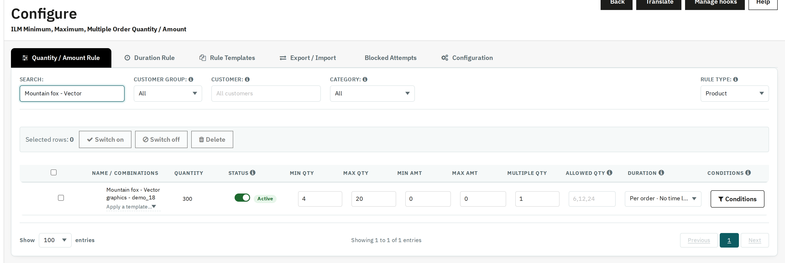

This is the master list of every product in the shop. Rows with combinations (size, color, etc.) expand under a bold parent row. Type directly into a cell and click away — it saves immediately.

Filtered to one product and given a real Min/Max/Duration — exactly what a merchant would do for one item.
| Field | What it does |
|---|---|
| Search | Narrows the table to one product or combination by name. |
| Customer Group | Narrows the table to rules that belong to one customer group. |
| Customer | Shows and sets the rules for one customer only. Leave it empty for rules that apply to everyone. |
| Category | Narrows the table to Product rules whose product belongs to this category (Rule Type = Product only). |
| Rule Type | Switches the whole table between Product, Category, Brand, Supplier and Customer Group rules. The shop-wide Global rule is set on the Configuration tab. |
| Quantity | The product's current stock quantity, shown for reference only — not editable here. |
| Status | Whether the rule applies right now, with a switch to turn it off and on. |
| Min Qty / Max Qty | The smallest / largest number of units a customer may order. |
| Min Amt / Max Amt | The smallest / largest amount a customer may spend. They can be set together with the quantities, on every level including Product. |
| Multiple Qty | Forces orders in packs of this size, e.g. 3, 6, 9 for a value of 3. |
| Allowed Qty | The only quantities that can be ordered, separated by commas, e.g. 6,12,24. A quantity in between is rounded up to the next allowed one when it is added to the cart. A rule takes either Allowed Qty or Multiple Qty, not both. |
| Duration | Picks which Duration Rule this row's limit is measured against. |
| Conditions | Applies the rule only in some situations. The button shows how many conditions are set. |
Each column appears only when its feature is switched on in Configuration > General. Min Amt / Max Amt and Limit Mult Qty are switched off after a fresh install; Allowed Qty is switched on after a fresh install and off after an upgrade.